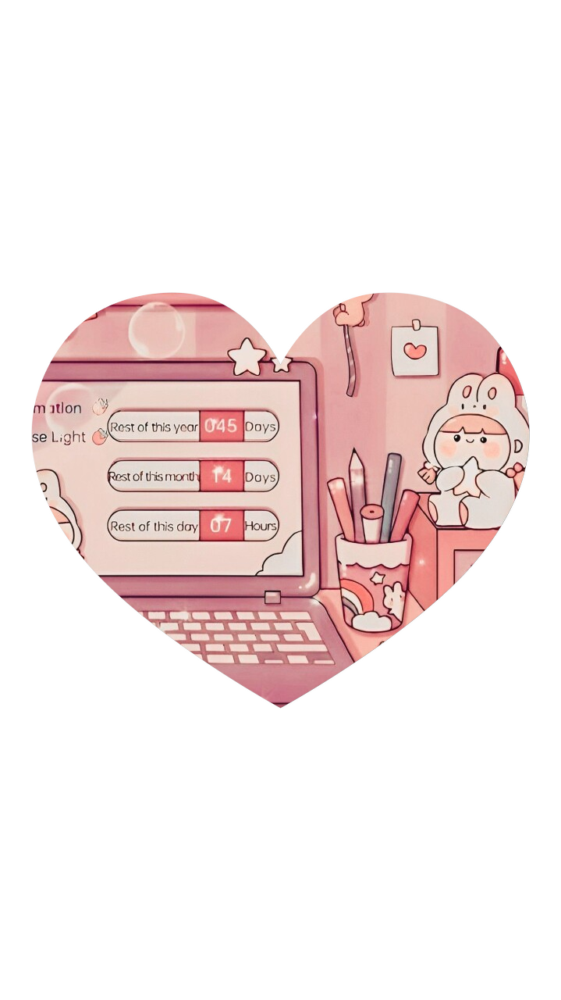

-
Liliastronauta
- 
Sobre mi:
Me llamo Liliana Mateos, estoy terminando mi carrera en física y me entusiasma aprender algo nuevo cada dia, razón por la cuel he creado esta página, ademas de servirme como práctica de lo que he aprendido sobre HTML y CCS es un espacio para compartir otros intereses. Podrás encontrar parte de mis pasatiempo favoritos, sobre la música que me gusta y un pequeño apartado sobre vlogs que aún esta en proceso de crearse.
Si te gusta el contenido y quieres ver más sobre mi, tambien puedes encontrar mis redes sociales.


Las cosas que disfruto hacer.
"Permitido seguir nuestros pasatiempos, y es en ellos donde nuestros seres más verdaderos encuentran expresión. Muchos de los hombres más grandes de la historia dle mundo lograron su fama fuera de sus ocupaciones habituales, en los momentos libres que la mayoría de la gente piensa que no son de gran utilidad."
Nixon Waterman
La música que más disfruto: K-pop
Mi historia con la música es bastante peculiar, desde muy joven siempre que alguien me preguntaba sobre mi grupo o tipo de música favorito no sabia que responder o respondía con lo primero que llegaba a mi mente, nunca habia sentido esa conexión tan especial con la música de la que todos hablaban, solía escuchar muchos generos variados y los disfrutaba, sin embargo no podía considerarme fan de ninguno. Fue hasta hace unos años que mi hermana (siendo fan del k-pop durante muchos años) comenzó a mostrarme la música de BTS, fue ese el primer grupo que conocí y que sin duda, me salvó. Posterior a eso me fui adentrando más en ese género y de ahi conocí a mis grupos favoritos que conoceras a continuación.
Te dejare algunas playlist de cada grupo por si quieres conocer y escuchar su música, solo haz click en caa foto.
Vlogs.
Aqui podrás encotrar una recopilación de Vlogs que haré más adelante, ¡esperalo pronto!